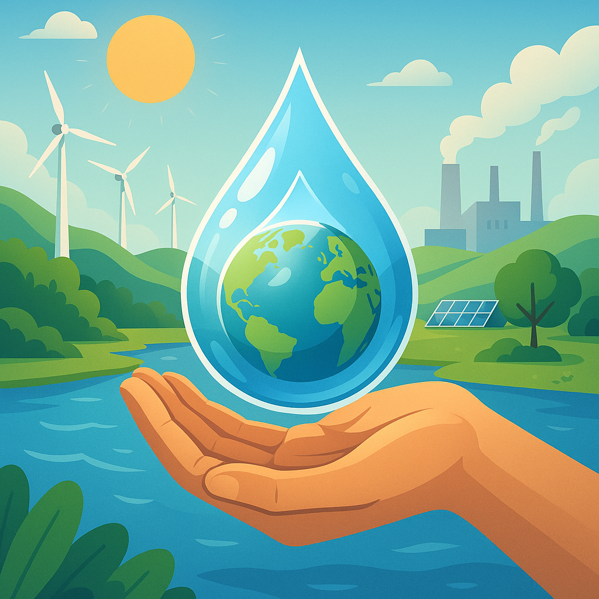
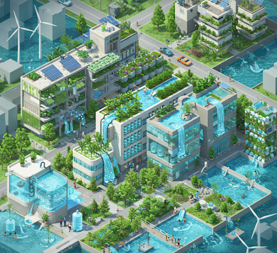
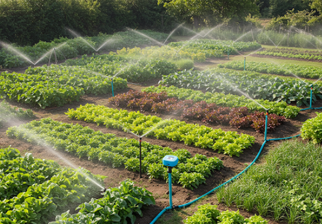
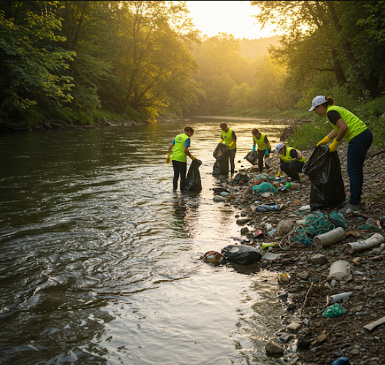

A Água como Conexão Vital entre Campo e Cidade
A Água em Ação: Conectando Realidades

Campo Coletando, Cidade Reutilizando
Iniciativas de captação de água no campo que garantem recursos e práticas de reuso na cidade para um ciclo hídrico consciente.
Ver Projetos

Irrigação Inteligente: Do Campo à Mesa
Tecnologias de irrigação que otimizam o uso da água na agricultura, garantindo a produção de alimentos para a cidade de forma sustentável.
Acompanhe as Técnicas

Água Preservada: Campo Saudável, Cidade Forte
Esforços conjuntos para a conservação da qualidade da água, essencial para a saúde do ecossistema rural e o bem-estar da população urbana.
Saiba Como Proteger